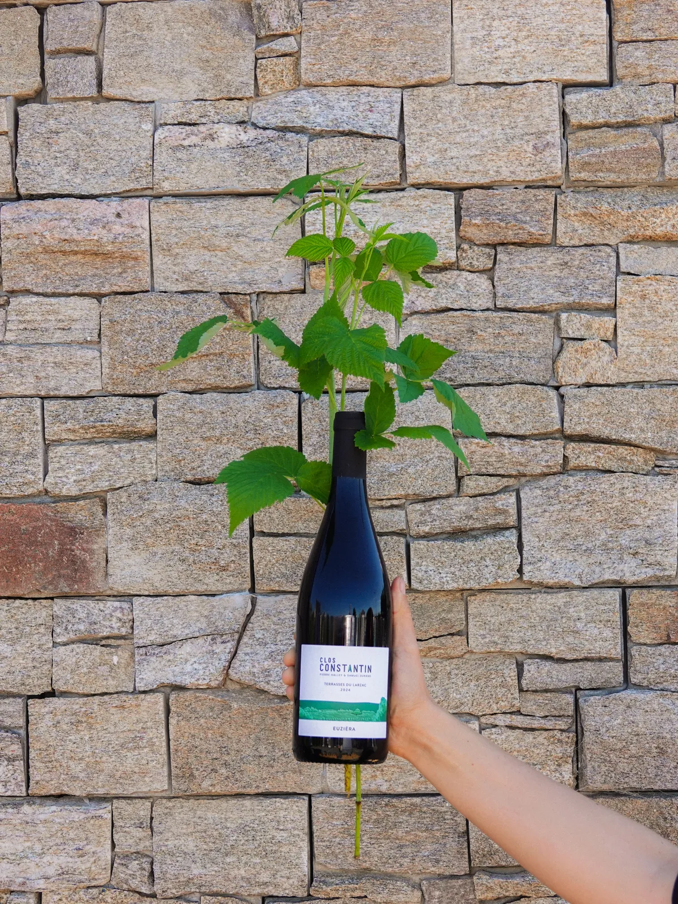

Languedoc
Clos Constantin
Il fait chaud, ça sent bon l'été !
Situé à 20 km de Montpellier, le Clos Constantin (en référence au prénom du grand-père de Pierre) fait partie de ces domaines qui font des Terrasses du Larzac une des plus belles appellations languedociennes.
Aux manettes de ce superbe domaine, Pierre et Samuel nous produisent des cuvées vibrantes et pleines d'énergie.
Le coup de cœur de Tanguy : Euziera, un sublime assemblage de grenache, syrah et carignan.
Et toi, t'as pas envie de soleil dans ton verre ?

